linux韩顺平学习笔记
前言
相关课程学习资料请添加韩老师微信获取
微信号hspfly
概述
linux是一个开源、免费的操作系统。 其稳定性、 安全性、 处理多并发已经得到业界的认可，因此目前很多企业级项目都会部署到linux/unix系统上。
Linux主要的发行版：
Ubuntu, RedHat, CentOS, Debain, Fedora, SuSE, OpenSUSE
(本课程主要使用CentOS)
Linux应用领域
服务器领域linux再服务器领域的应用是最强的
linux免费、稳定、高效等特点在这里得到了很好的体现， 尤其在一些高端领域尤为广泛（c/c++/php/java/python/go）
嵌入式领域linux运行稳定、对网络的良好支持性、低成本， 且可以根据需要进行剪裁，内核最小可以达到几百KB等特点，使其近些年来再嵌入式领域广泛应用
主要应用： 机顶盒、数字电视、网络电话、程控交换机、手机、PDA、智能家居、智能硬件等都是其应用领域。以后再物联网中应用会更加广泛。
环境搭建
- VMware Workstation Pro 15.5
- Centos7.6 DVD版 （目前主流的生产环境）
- Centos8.1 DVD版 （未来的主流）
在配置Cenots时， 网络连接模式要选NAT模式，避免造成IP冲突。
虚拟机
虚拟机克隆
如果你已经安装了一台linux操作系统， 还想要更多的， 没必要再重新安装， 直接克隆即可。
- 方式1：直接拷贝一份安装好的虚拟机文件，然后用vmware打开
- 方式2：使用vmware的克隆操作。（注意：克隆时需要先关闭linux系统）
虚拟机快照
如果在使用虚拟机系统时，想要回到原先的摸一个状态，比如担心可能有些误操作造成系统异常，需要回到原先某个正常运行的状态，vmware提供了这样的功能，叫快照管理
快照管理类似于Git的分支管理，但使用时会占用一定的磁盘空间，建议在系统发生有意义的变化时使用。
虚拟机迁移和删除
安装好的虚拟机，本质上就是（放在文件夹中的）文件。因此虚拟系统的迁移很方便，你可以把安装好的虚拟系统文件夹整体拷贝或者剪切到另外的位置使用。
删除也很简单，先在vmware中进行移除 （不会删除本地文件），再手动删除本地文件。
windows和虚拟机共享文件
安装vmtools
可以在windows下更好地管理vm虚拟机
可以设置wondows和centos的共享文件夹
Linux 目录结构
基本介绍
Linux的文件系统采用级层式的树状目录结构，在此结构中的最上层是根目录”/“，然后在此目录下再创建其他的目录。
在Linux世界里，一切皆文件，硬件设备、网络通信等资源也是通过文件管理。
这样做最明显的好处是，开发者仅需要使用一套 API 和开发工具即可调取 Linux 系统中绝大部分的资源。
不利之处在于，使用任何硬件设备都必须与根目录下某一目录执行挂载操作，否则无法使用。我们知道，本身 Linux 具有一个以根目录为树根的文件目录结构，每个设备也同样如此，它们是相互独立的。如果我们想通过 Linux 上的根目录找到设备文件的目录结构，就必须将这两个文件系统目录合二为一，这就是挂载的真正含义。
具体目录结构
了解即可
可以用pwd指令显示当前用户所在目录的绝对路径
/bin
【常用】：是Binary的缩写，这个目录存放着最经常使用的命令。
/sbin：
s就是Super User的意思，这里存放的是系统管理员使用的系统管理程序。
/home
【常用】：存放普通用户的主目录，在Linux中每个用户都有一个自己的目录，一般该目录名是以用户的账号命名的。
/root
【常用】：该目录为系统管理员，也称作超级权限者的用户主目录。
/lib：
系统开机所需要最基本的动态连接共享库，其作用类似于Windows里的DLL文件。几乎所有的应用程序都需要用到这些共享库。
/lost+found：
这个目录一般情况下是空的，当系统非法关机后，这里就存放了一些文件。
/etc
【常用】：所有的系统管理所需要的配置文件和子目录my.conf。
/usr
【常用】：这是一个非常重要的目录，用户的很多应用程序和文件都放在这个目录下，类似与windows下的program files目录。
/boot
【常用】：存放的是启动Linux时使用的一些核心文件，包括一些连接文件以及镜像文件。
/proc
【不能动】：这个目录是一个虚拟的目录，它是系统内存的映射，访问这个目录来获取系统信息。
/srv
【不能动】：service的缩写，该目录存放一些服务启动之后需要提供的数据。
/sys
【不能动】：这是linux2.6内核的一个很大的变化。该目录下安装了2.6内核中新出现的一个文件系统sysfs。
/tmp：
这个目录是用来存放一些临时文件的。
/dev：
类似windows的设备管理器，把所有的硬件用文件的形式存储。
/media
【不能动】：linux系统会自动识别一些设备，例如U盘光驱等等，当识别后，linux会把识别的设备挂载到这个目录下。
/mnt
【常用】：系统提供该目录是为了让用户临时挂载别的文件系统的，我们可以将外部的存储挂载在/mnt/上，然后进入该目录就可以查看里面的内容了。
/opt：
这是给主机额外安装软件所摆放的目录，如安装ORACLE数据库就可放到该目录下。默认为空。
/usr/local
【常用】：这是另一个给主机额外安装软件所安装的目录，一般是通过编译源码的方式安装的程序。
/var
【常用】：这个目录中存放着在不断扩充着的东西，习惯将经常被修改的目录放在这个目录下，包括各种日志文件。
/selinux：
SELinux是一种安全子系统，它能控制程序只能访问特定文件，有三种工作模式， 可以自行设置。
Linux 远程连接
为什么要远程连接Linux？
- Linux服务器是开发小组共享
- 正式上线的项目是运行在公网
- 因此程序员需要远程登录到Linux进行项目管理或者开发
远程登陆
xshell 7 XSHELL - The Industry’s Most Powerful SSH Client (netsarang.com)
首先在虚拟机中通过ifconfig命令获取ip
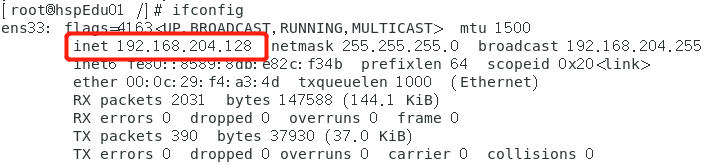在xshell中新建会话，填入对应ip

连接成功
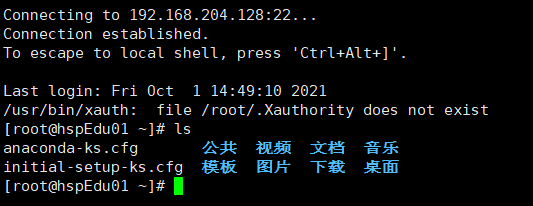
文件上传下载
xshell只能进行远程命令式的操作，如果需要上传或下载文件，需要用到Xftp XFTP - NetSarang Website
配置过程与xshell类似
新建会话并输入对应主机ip，协议默认SFTP
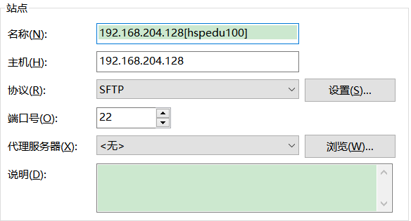输入系统对应的用户名和密码
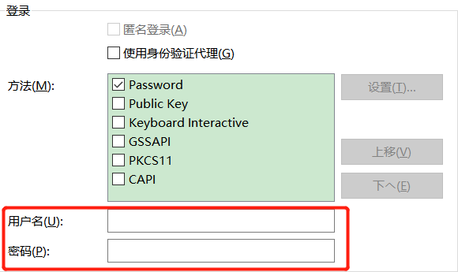连接成功
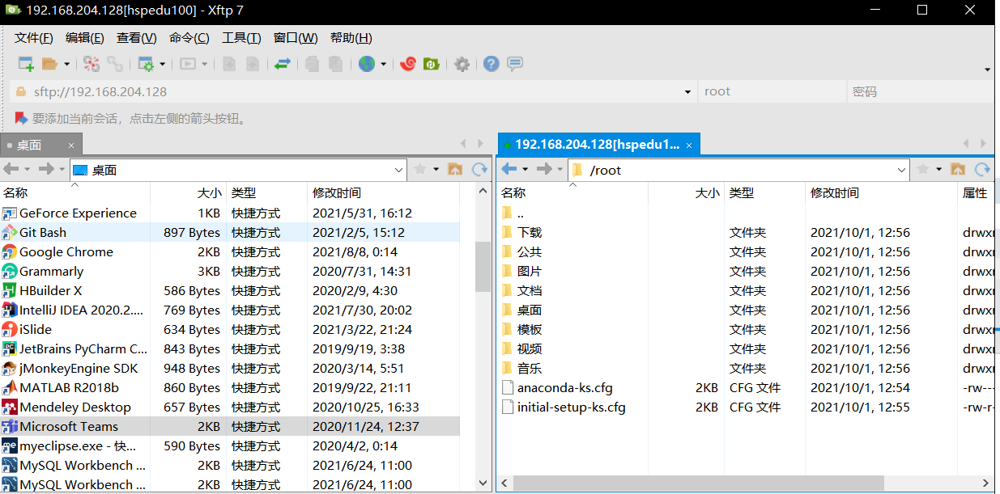（如果有乱码，则在属性中修改编码格式）
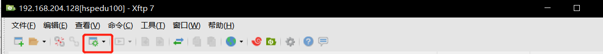 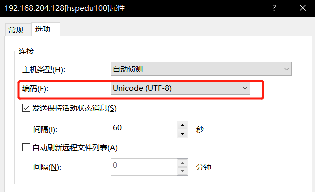
vi & vim 编辑器
vim具有程序编辑的能力，可以看作是vi增强版本，可以生动地以字体颜色辨别语法的正确性，方便程序设计。代码补完、编译及错误跳转等方便编程的功能特别丰富，因此被广泛使用。
vi 和 vim 常用的三种模式
正常模式（默认模式）
在这个模式中，可以使用
上下左右按键来移动光标，你可以使用删除字符或删除整行来处理档案内容，也可以使用复制、粘贴来处理文件数据插入模式
按下
i,I,o,O,a,A,r,R等任何一个字母之后才会进入编辑模式命令行模式
按Esc退出插入模式，然后输入”:”进入命令行模式。在这个模式中，可以提供你相关指令，完成读取、存盘、替换、离开vim、显示行号等动作
各模式相互切换示意图
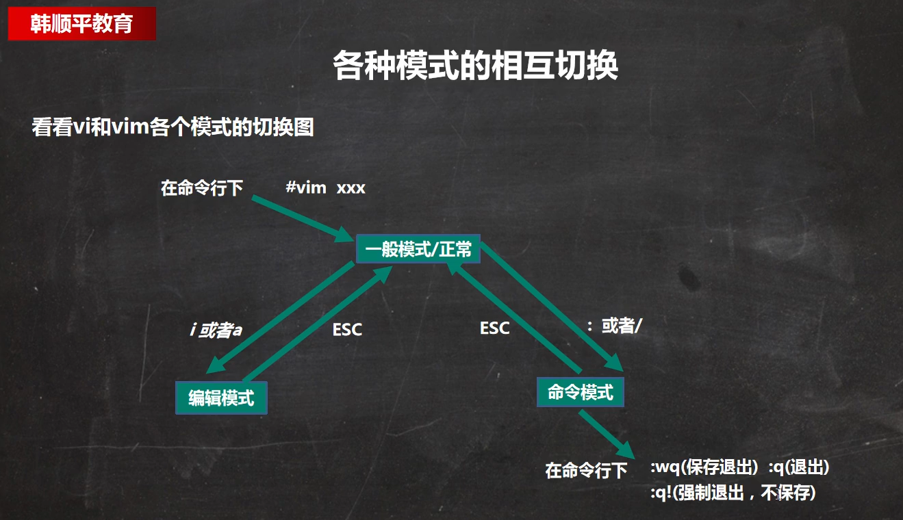快捷键
- 拷贝当前行 【yy】，拷贝当前向下5行 【5yy】，粘贴 【p】
- 删除当前行 【dd】，删除当前向下5行 【5dd】
- 在文件中查找某个单词，在
命令行模式下输入【/关键字】，回车查找，按n查找下一个 - 设置文件行号【set nu】，取消文件行号【set nonu】
- 编辑文件，到达文档最末行/首行，
正常模式下输入【G】/【gg】 - 撤销输入，在
正常模式下输入【u】 - 编辑文件，光标移动到某行,
正常模式下输入【shift+g】- 显示行号：set nu
- 输入行号这个数
- 输入shift+g
Vim键盘图

关机 、 重启和用户登录注销
关机 & 重启命令
shutdown -h now：表示立即关机
shutdown -h 1：表示1分钟后关机 （直接输入shutdown等效于shutdown -h 1）
shutdown -r now：立即重启
halt：关机，等效于shutdown -h now
reboot：重启，等效于shutdown -r now
sync：把内存的数据同步到磁盘
当我们关机或者重启时，都应该先执行一下sync，防止数据丢失
现在的shutdown、halt、reboot等命令均已在关机前进行了sync
logout：注销用户，在图形运行级别无效，在运行级别3有效。
用户登录和注销
登陆时尽量少使用root账号，因为他是系统管理员，拥有最大权限。使用时要注意避免操作失误。可以利用普通用户登录，登录后再用”su - 用户名“来切换成系统管理员身份。
在提示符下驶入logout即可注销用户
logout注销指令在图形运行级别无效，在运行级别3下有效。
运行级别这个概念，后面介绍。
用户管理
Linux系统是一个多用户多任务的操作系统，任何一个要使用系统资源的用户，都必须首先向系统管理员申请一个账号，然后以这个账号的身份进入系统。
添加用户
基本语法 useradd 用户名
案例：添加一个用户milan ==> useradd milan
默认该用户的家目录在/home/milan
当创建用户成功后，会自动创建和用户同名的家目录
也可以通过useradd -d 指定目录 用户名，给新创建的用户指定家目录
指定 & 修改密码
基本语法 passwd 用户名
案例：给milan指定密码 ==> passwd milan
删除用户
基本语法 userdel 用户名
案例1：删除用户milan，但要保留家目录 ==> userdel milan
案例2：删除用户milan以及主目录（home/milan） ==> userdel -r milan
一般情况下建议保留家目录
查询用户
基本语法 id 用户名
案例：查询root信息 ==> id root
当用户不存在时，返回无此用户
查询当前用户/登录用户
基本语法
whoami查询当前用户who am i查询登录用户
切换用户
基本语法 su - 用户名
在Linux中，如果当前用户的权限不够，可以通过su - 指令切换到高权限用户，比如root。从权限高的用户切换到权限低的用户不需要输入密码，反之则需要。当需要返回到原来用户时，使用exit/logout指令。
用户组
类似于角色，系统可以对有共性/权限的多个用户进行统一的管理。
每个用户至少要属于一个组！
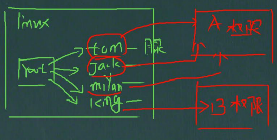基本语法
- 添加组
groupadd 组名 - 删除组
groupdel 组名 - 创建用户时指定组
useradd -g 组名 用户名 - 修改用户组
usermod -g 组名 用户名
用户和组相关文件
- /etc/passwd 文件
- 用户（user）的配置文件，记录用户的各种信息。
- 每行的含义：用户名：口令：用户标识号：注释性描述：主目录：登录shell
- /etc/shadow 文件
- 口令配置文件
- 每行的含义：登录名：加密口令：最后一次修改时间：最小时间间隔：最大时间间隔：警告时间：不活动时间：失效时间：标志
- /etc/group 文件
- 组（group）的配置文件，记录Linux包含的组的信息。
- 每行含义：组名：口令：组标识号：组内用户列表（隐藏）
运行级别
共有7个运行级别：
关机
单用户【找回丢失密码】
多用户状态没有网络服务
多用户状态有网络服务
系统未使用保留给用户
图形界面
系统重启
常用运行级别是3和5，也可以指定默认运行级别，后面演示。
指定运行级别
基本指令 init [0123456]
Centos7后运行级别说明
在Centos7以前，在/etc/inittab文件中进行修改
在Centos7以后进行了简化，如下：
multi-user.target: analogous to runlevel 3
graphical.target: analogous to runlevel 5
查看当前默认运行级别 systemctl get-default
设置默认运行级别 systemctl set-default xxx.target
找回root密码 【面试题】
不同版本的系统操作流程略有区别，这里适用于Centos7之后的版本。
首先启动系统，进入开机界面，在页面中按”e”进入编辑界面

进入编辑界面，使用键盘上的上下键把光标往下移动，找到以”linux16”开头内容所在的行数，在行的最后面输入
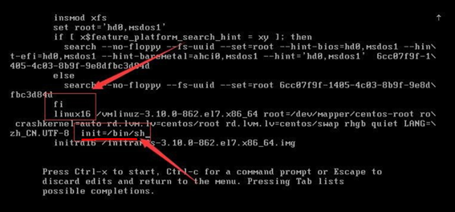init=/bin/sh输入完成后，按快捷键
Ctrl + x进入单用户模式在光标闪烁的位置输入
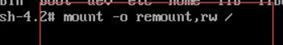mount -o remount,rw /, 然后按回车键在新的一行最后面输入
passwd， 完成后按键盘的回车键（Enter）。输入密码，然后再次确认密码即可(密码长度最好8位以上,但不是必须的), 密码修改成功后，会显示passwd…..的样式，说明密码修改成功在鼠标闪烁的位置中（最后一行中）输入
touch /.autorelabel，完成后按键盘的回车键（Enter）继续在光标闪烁的位置中，输入
exec /sbin/init，完成后按键盘的回车键（Enter）,等待系统自动修改密码(这个过程时间可能有点长，耐心等待)，完成后，系统会自动重启, 新的密码生效了
帮助指令
man [命令或配置文件]（获得帮助信息）help 命令（获得shell内置命令得帮助信息）
文件目录类
pwd指令：显示当前工作目录的绝对路径
基本语法
pwd
ls指令：查看当前目录的内容信息
基本语法
ls [选项] [目录或文件]常用选项：
- -a：显示当前目录所有的文件和目录，包括隐藏的
- -l：以列表的方式显示信息
cd指令：切换到指定目录
基本语法
cd [参数]绝对路径和相对路径：绝对路径是从根目录开始，相对目录是从当前位置开始
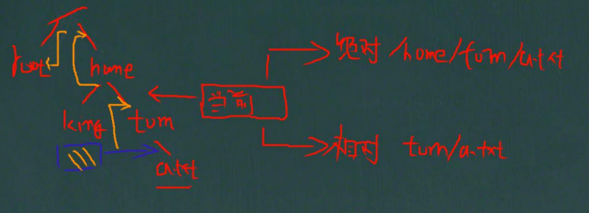
cd ~ 或者 cd：回到自己的家目录，比如你是root，则到/root；如果是tom，则到/home/tom
cd..：回到当前目录的上一级目录
案例：
- 使用绝对路径切换到root目录 ==> cd /root
- 使用相对路径到/root，当前在/home/tom ==> cd ../../root
mkdir指令：创建目录
基本语法
mkdir [选项] 要创建的目录常用选项
- -p：创建多级目录
实例：
- 创建一个目录/home/dog ==> mkdir /home/dog
- 创建多级目录/home/animal/tiger ==> mkdir -p /home/animal/tiger
rmdir指令：删除空目录
基本语法
rmdir [选项] 要删除的空目录案例：
- 删除目录/home/dog ==> rmdir /home/dog
使用细节：
- mkdir删除的是空目录，如果目录下有内容是无法删除的。
- 如果需要删除非空目录，需要使用rm -rf删除
touch指令：创建空文件
基本语法
touch 文件名称案例：
- 创建一个空文件hello.txt ==> touch hello.txt
cp指令：拷贝文件到指定目录
基本语法
cp [选项] source dest常用选项：
- -r：递归复制整个文件夹
实例：
- 将/home/hello.txt拷贝到/home/bbb目录下 ==> cp /home/hello.txt /home/bbb
- 将/home/bbb整个目录拷贝到/opt ==> cp -r /home/bbb /opt
使用细节：
- 强制覆盖不提示的方法：\cp, \cp -r
rm指令：移除文件或目录
基本语法
rm [选项] 要删除的文件或目录常用选项：
-r：递归删除整个文件夹
-f：强制删除不提示
实例：
将/home/hello.txt删除 ==> rm /home/hello.txt
递归删除整个文件夹/home/bbb ==> rm -rf /home/bbb
使用细节：
想要强制删除不提示，带上-f参数即可
使用前一定慎重！！！
mv指令：移动文件与目录 或 重命名
基本语法：
mv oldFileName newFileName重命名mv source dest移动文件
实例：
将/home/cat.txt文件重命名为pig.txt ==> mv /home/cat.txt /home/pig.txt
将/home/pig.txt文件移动到/root目录下 ==> mv /home/pig.txt /root
移动目录/opt/bbb到/home下 ==> mv /opt/bbb /home
cat指令：查看文件内容
基本语法
cat [选项] 文件名常用选项：
- -n： 显示行号
实例：
- 显示/etc/profile并显示行号 ==> cat -n /etc/profile
使用细节：
- cat只能浏览文件，而不能修改文件。为了浏览方便，一般会带上管道命令|more
- e.g. cat -n /etc/profile | more
more指令
基本语法
more 文件名more指令是一个基于VI编辑器的文本过滤器，它以全屏幕的方式按页显示文本文件的内容。其中内置了若干快捷键（交互的指令），如下：
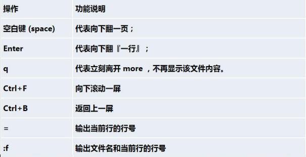
实例：
- 查看/etc/profile文件 ==> more /etc/profile
less指令
基本语法
less 文件名less指令用来分屏查看文件的内容，它的功能与more指令类似，但是比more指令更加强大，支持各种显示终端。less指令在显示文件内容时，并不是一次将整个文件加载之后才显示，而是根据显示需要加载内容，对于大型文件有较高的效率。操作说明如下：
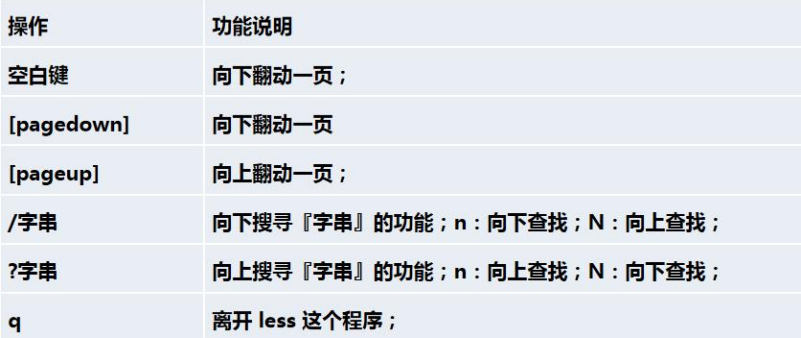
实例：
- 查看/etc/profile文件 ==> less /etc/profile
echo指令：输出内容到控制台
基本语法
echo [选项] [输出内容]实例：
- 输出环境变量$HOSTNAME ==> echo $HOSTNAME
- 输出hello world ==> echo “hello world” （可以不加双引号）
head指令：输出文件头部内容，默认输出前10行
基本语法
head [-n number] 文件名案例：
- 查看/etc/profile前5行 ==> head -n 5 /etc/profile
tail指令：输出文件尾部内容，默认输出最后10行
基本语法：
tail [-n number] 文件名输出最后number行文件tail -f 文件名实时追踪该文档的所有更新
实例：
- 查看/etc/profile最后5行 ==> tail-n 5 /etc/profile
- 实时监控mydate.txt ==> tail -f mydate.txt （文件发生变化后会直接在控制台输出）
> 输出重定向指令 和 >> 追加指令
基本语法：
ls -l > 文件列表的内容写入文件中（覆盖写）ls -al >> 文件列表的内容追加到文件末尾cat 文件1 > 文件2将文件1的内容覆盖到文件2echo ”内容“ >> 文件把内容追加到文件末尾
实例：
- 将/home目录下的文件列表写入到/home/info.txt中，覆盖写入 ==> ls -l /home > /home/info.txt （如果info.txt没有，会自动创建）
- 将当前日历信息追加到/home/mycal文件中 ==> cal >> /home/mycal
ln指令：软链接，类似于windows里的快捷方式，主要存放了链接其他文件的路径
基本语法
ln -s 原文件或目录 软链接名案例：
- 在/home目录下创建一个软链接myroot，连接到/root目录 ==> ln -s /root /home/myroot
- 删除软连接myroot ==> rm /home/myroot
细节说明：
- 当我们使用pwd指令查看目录时，看到的仍然是软链接所在的目录
history指令：查看已执行过的历史命令，也可以执行历史命令
基本语法
history [n]实例：
- 显示所有的历史命令 ==> history
- 显示最近使用过的10个指令 ==> history 10
- 执行历史编号为5的指令 ==> !5 （使用前先用history查看指令的历史编号）
时间日期类
date指令：显示当前日期
基本语法：
date显示当前时间date +%Y显示当前年份date +%m显示当前月份date +%d显示当前是哪一天date "+%Y-%m-%d %H:%M:%S"显示年月日时分秒
date指令：设置日期
基本语法
date -s 字符串时间实例：
- date -s “2021-6-20 16:44:30”
cal指令：查看日历
基本语法
cal [选项]实例：
显示当前月份的日历 ==> cal
显示2021年的日历 ==> cal 2021
搜索查找类
find指令：从指定目录向下递归地遍历其各个子目录，将满足条件的文件或者目录显示在终端
基本语法
find [搜索范围] [选项]选项 功能 -name<查询方式> 按照指定的文件名查找模式查找文件 -user<用户名> 查找属于指定用户名所有文件 -size<文件大小> 按照指定的文件大小查找文件（+n大于，-n小于，n等于，单位有k、M、G） 实例：
- 按文件名，查找/home目录下的hello.txt文件 ==> find /home -name hello.txt
- 按拥有者，查找/opt目录下用户名为nobody的文件 ==> find /opt -user nobody
- 查找整个linux系统下大于200M的文件 ==> find / -size +200M
locate指令
locate指令可以快速定位文件路径。locate命令利用事先建立的系统中所有文件名称及路径的locate数据库实现快速定位的文件名。Locate指令无需遍历整个文件系统，查询速度较快。为了保障查询结果的准确度，管理员必须定期更新locate时刻。
基本语法
locate 文件名特别说明：由于locate指令基于数据进行查询，所以第一次运行前，必须是使用updatedb指令创建locate数据库
实例：
- 用locate指令快速定位hello.txt文件所在目录 ==> updatedb, locate hello.txt
which指令：查看某个指令在哪个目录下
基本语法
which 指令名实例：
- 查看ls指令在哪个目录 ==> which ls
grep指令和管道符号|
grep过滤查找，管道符，“|“，表示将前一个命令输出传递给后面的命令处理。grep一般和管道符号一起使用。
基本语法
grep [选项] 查找内容 源文件常用选项：
- -n 显示匹配行及行号
- -i 忽略字母大小写
实例：过滤查找hello.txt中的”yes“文本
- 写法1：cat /home/hello.txt | grep -n “yes”
- 写法2：grep -n “yes” /home/hello.txt
压缩和解压类
gzip/gunzip指令：只能用于压缩/解压文件
基本语法
gzip/gunzip 文件名使用细节：压缩后原文件会消失，解压后压缩文件会消失
zip/unzip指令：用于压缩/解压文件或文件夹
基本语法：
zip/unzip [选项] xxx.zip 压缩内容常用选项：
- -r：递归压缩，即压缩目录 （zip常用）
- -d<目录>：指定解压后文件的存放目录（unzip常用）
tar指令：打包指令
基本语法：
tar [选项] xxx.tar(.gz) 打包内容选项说明：
选项 功能 -c 产生.tar打包文件 -v 显示详细信息 -f 指定压缩后的文件名 -z 打包同时压缩 -x 解包.tar文件 实例：
- 压缩多个文件，将pig.txt和cat.txt 压缩成 pc.tar.gz ==> tar -zcvf pc.tar.gz pig.txt cat.txt
- 将/home的文件夹压缩成myhome.tar.gz ==> tar -zcvf myhome.tar.gz /home
- pc.tar.gz 解压到当前目录 ==> tar -zxvf pc.tar.gz
- 将myhome.tar.gz 解压到/opt/tmp2目录下 ==> tar -zxvf myhome.tar.gz
-Copt/tmp2 (-C后面指定解压目录)
组管理和权限管理
在Linux中的每个用户必须属于至少一个组，不能独立于组外。在Linux中每个文件都有所有者、所在组、其他组的概念
一个文件a.txt由tom创建，tom属于组1，那么a.txt的所有者是tom，所在组是组1。组1中的用户对a.txt有一定的权限。组2、组3不包含tom，它们相对于a.txt的所在组而言是其他组。
文件/目录 所有者
一般为文件的创建者，谁创建了该文件，就自然成为该文件的所有者。
查看文件的所有者
可以通过ls指令查看 ls -ahl
修改文件所有者
基本指令 chown 用户名 文件名
实例：
- 将apple.txt文件的所有者修改成tom ==> chown tom apple.txt
组的创建
基本指令 groupadd 组名
实例：
- 创建一个monster组 ==> groupadd monster
- 创建一个用户fox，并加入到monster组中 ==> useradd -g monster fox
文件/目录 所在组
当某个用户创建了一个文件后，这个文件的所在组就是该用户所在的组
查看文件/目录所在组
可以通过ls指令查看 ls -ahl

修改文件/目录的所在组
基本指令：
chgrp 组名 文件/目录改变所在组- -R 如果是目录，使其下所有子文件或目录递归生效
实例：
- 修改orange.txt文件到fruit组
- groupadd fruit
- touch orange.txt (假设在root权限下创建，默认属于root组)
- chgrp fruit orange.txt
- 将/home/test目录下所有的文件和目录的所在组都改成shaolin ==> chgrp -R shaolin /home/test
其他组
除文件的所有者和所在组的用户外，系统的其他用户都是文件的其它组
改变用户所在组
基本指令：
usermod -g 新组名 用户名usermod -d 目录名 用户名改变该用户登录的初始目录 （特别说明：用户需要有进入到新目录的权限）
实例：
- 将用户zwj从原来所在组修改到wudang组 ==> usermod -g wudang zwj
权限的基本介绍
ls -l显示如下内容
-rw-r–r–. 1 root root 121 10月 2 21:37 hello.java
0-9位说明：
第0位确定文件类型（d，-，l，c，b）
d是目录，相当于windows的文件夹-是普通文件
l是链接文件，相当于windows的快捷方式
c是字符设备文件，鼠标，键盘
b是块设备，比如硬盘第1-3位确定所有者（该文件的所有者）拥有该文件的权限 [User]
第4-6位确定所属组（同用户组的）拥有该文件的权限 [Group]
第7-9位确定其他用户拥有该文件的权限 [Other]
rwx权限
rwx作用到文件
【r】代表可读（read）：可以读取、查看
【w】代表可写（write）：可以修改，但是不代表可以删除该文件，删除一个文件的前提条件是对该文件所在的目录有写权限，才能删除该文件
【x】代表可执行（execute）：可以被执行
rwx作用到目录
【r】代表可读（read）：可以读取，ls查看目录内容
【w】代表可写（write）：可以修改，对目录内创建+删除+重命名目录名
【x】代表可执行（execute）：可以进入该目录
文件及目录权限实际案例
ls -l显示如下内容
-rw-r–r–. 1 root root 121 10月 2 21:37 hello.java
10个字符确定不同用户能对文件干什么：
- 第一个字符代表文件类型： -l d c b
- 其余字符每三个一组（rwx）读（r）写（w）执行（x）
- 第一组rw-：文件拥有者的权限是读、写但不能执行
- 第二组r–：与文件拥有者同一组的用户的权限是读、但不能写和执行
- 第三组r–-：不与文件拥有者同组的其他用户的权限是读、但不能写和执行
可用数字表示为：r=4，w=2，x=1。 因此rwx = 4 + 2 + 1 = 7
其他说明：
- 1 若是文件：硬件连接 若是目录：子目录数+文件数
- root 用户
- root 组
- 121 文件大小（字节），如果是文件夹显示4096字节
- 10月 2 21:37
- hello.java 文件名
修改权限
基本指令 chmod [选项,选项...] 文件/目录名
第一种方式：+、-、=变更权限
u：所有者
q：所有组
o：其他用户
a：所有人（u、g、o的总和）
指令示例：
- chmod u=rwx,g=rx,o=x 文件/目录名
- chmod o+w 文件/目录名
- chmod a-x 文件/目录名
实例：
- 给hello.java文件的所有者读写执行的权限，给所在组读执行权限， 给其他组读执行权限 ==> chmod u=rwx,g=rx,0=x hello.java
- 给hello.java文件的所有者除去执行的权限，增加组写的权限 ==> chmod u-x,g+w hello.java
- 给hello.java文件的所有用户添加读的权限 ==> chmod a+r hello.java
第二种方式：通过数字变更权限
r=4，w=2，x=1， rwx=4+2+1=7
chmod u=rwx,g=rx,o=x 文件目录名
相当于chmod 751 文件目录
实例：
- 将/home/hello.java文件的权限修改成 rwxr-xr-x,使用数字的方式实现 ==> chmod 755 /home/hello.java
修改文件所有者
基本指令：
-
chown newowner 文件/目录改变所有者 chown newowner:newgroup 文件/目录改变所有者和所在组- -R 如果是目录，则使其下所有子文件或目录递归生效
实例：
- 将/home/hello.java文件的所有者修改成tom ==> chown tom /home/hello.java
- 将/home/test目录下所有的文件和目录的所有者都修改成tom ==> chown -R tom /home/test
定时任务调度
crond 任务调度
crontab 进行定时任务的设置
概述：
任务调度：是指系统在某个时间执行的特定的命令或程序。
任务调度分类.
- 系统工作：有些重要的工作必须周而复始地执行。如病毒扫描等
- 个别用户工作：个别用户可能希望执行某些程序，比如对mysql数据库的备份
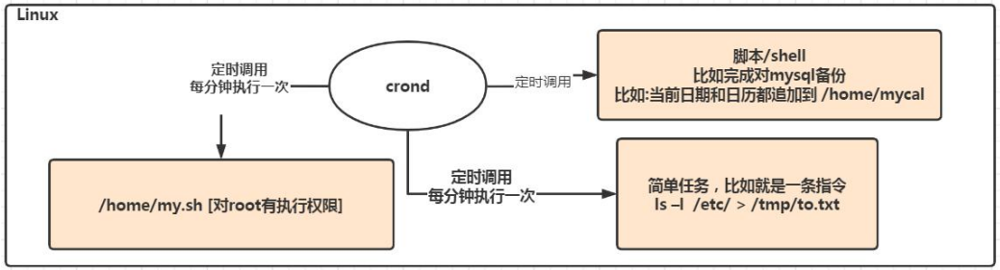
基本语法
crontab [选项]
常用选项：
- -e 编辑crontab定时任务
- -l 查询crontab任务
- -r 删除当前用户所有的crontab任务
快速入门
- 设置任务调度文件：/etc/crontab
- 设置个人任务调度。执行crontab -e命令
- 接着输入任务到调度文件
- 例如：
- */1 * * * * ls -l /etc/ > /tmp/to.txt
- 意思说每个小时的每分钟执行ls -l /etc/ > /tmp/to.txt 命令
参数细节说明：
5个占位符的说明
特殊符号的说明：
特殊时间执行案例：
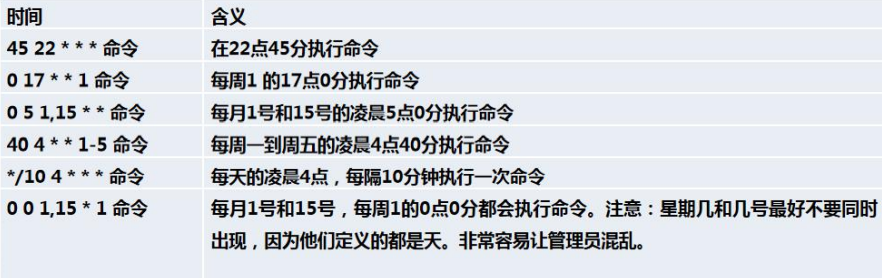
应用实例
每隔1分钟，就将当前的日期信息，追加到/tmp/mydate文件中
crontab -e
*/1 * * * * data >> /tmp/mydata每隔1分钟，将当前日期和日历都追加到/home/mycal文件中
第一步: 编辑一个脚本文件
vim /home/my.sh
date >> /home/mycal
cal >> /home/mycal
第二步: 给my.sh增加执行权限 (必须，否则没权限无法执行)
chmod u+x /home/my.sh
第三步:
crontab -e
*/1 * * * * /home/my.sh每天凌晨2:00将mysql数据库testdb，备份到文件中，提示：指令为mysqldump -u root -p 密码 数据库 >> /home/bd.bak
crontab -e
0 2 * * * mysqldump -u root -proot testdb > /home/db.bak
crond相关指令
crontab -r 终止任务调度
crontab -l 列出当前有哪些任务调度
service crond restart 重启任务调度
at定时任务
基本介绍
at命令是一次性定时计划任务，at的守护进程atd会以后台模式运行，检查作业队列来运行
默认情况下，atd守护进程每60秒检查作业队列，有作业时，会检查作业运行时间，如果时间与当前时间匹配，则运行此作业
at命令是一次性定时任务计划，执行完一个任务后不再执行此任务了
在使用at命令的时候，一定要保证atd进程的启动，可以使用相关指令来查看
ps -ef | grep atd
示意图：
执行完就会移出队列了，所以不会反复执行
at 命令格式
at [选项] [时间]
输入完指令后，要连续按两次ctrl + D 结束at命令输入
at 命令选项
at 时间定义
应用实例
2天后的下午5点执行/bin/ls /home
atq命令来查看系统中没有执行的工作任务
atq
明天17点钟，输出时间到指定文件内，比如/root/date100.log
2分钟后，输出时间到指定文件内，比如 /root/date200.log
删除已经设置的任务，
atrm 编号atq // 先查看还未执行的任务编号
atrm 4 // 删除编号为4的任务
Linux 磁盘分区
Linux 分区
原理介绍
Linux来说无论有几个分区，分给哪一目录使用，它归根结底就只有一个根目录，一个独立且唯一的文件结构，Linux中每个分区都是用来组成整个文件系统的一部分
Linux采用了一种叫”载入“的处理方法，它的整个文件系统包含了一整套的目录，且将一个分区和一个目录联系起来。这时要载入的一个分区将使它的存储空间在一个目录下获得
示意图：
硬盘说明
Linux硬盘分IDE硬盘和SCSI硬盘，目前基本上是SCSI硬盘
对于IDE硬盘，驱动驱动标识符为” hdx~ “，其中”hd“表明分区所在的设备类型，这里是指IDE硬盘了。”x“为盘号（a为基本盘，b为基本从属盘，c为辅助主盘，d为辅助从属盘），”~“代表分区，前四个分区用数字1到4表示，他们是主分区和拓展分区；从5开始就是逻辑分区。
例如，hda3表示为第一个IDE硬盘上的第三个主分区或拓展分区，hdb2表示为第二个IDE硬盘上的第二个主分区或拓展分区
对于SCSI硬盘则标识为”sdx~“，SCSI硬盘是用”sd“来表示分区所在设备的类型的，其余则和IDE硬盘的标识方式一样
查看所有设备挂载情况
命令：lsblk or lsblk -f
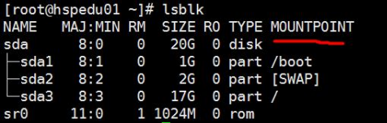

UUID是分区的唯一标识符，40位
挂载的经典案例
说明
以增加一块硬盘为例来熟悉下磁盘的相关指令和深入理解磁盘分区、挂载、卸载的概念。
如何增加一块硬盘？
- 虚拟机添加硬盘
- 分区
- 格式化
- 挂载
- 设置可以自动挂载
步骤1
在虚拟机菜单中，选择设置，然后设备列表里添加硬盘，然后一路下一步，中间只有选择磁盘大小的地方需要修改，直到完成。然后重启系统才能识别。
步骤2
分区命令 fdisk /dev/sdb
dev（device)这个目录中包含了所有Linux系统中使用的外部设备。但是不是存放外部设备的驱动程序。它实际上是一个访问这些外部设备的端口。我们可以非常方便的去访问这些外部设备，和访问一个文件，一个目录没有任何区别 |
开始对 /sdb分区
m 显示命令列表
p 显示磁盘分区 同 fdisk -l
n 新增分区
d 删除分区
w 写入并退出
说明：开始分区后输入n，新增分区，然后选者p，分区类型为主分区。两次回车默认剩余全部空间。最后输入w写入分区并退出，若不保存退出输入q
步骤3
格式化磁盘
分区命令：mkfs -t ext4 /dev/sdb1
其中ext4是分区类型
步骤4
挂载：将一个分区与一个目录联系起来
mount 设备名称 挂载目录
例如：mount /dev/sdb1 /newdisk
解除挂载：umount 设备名称 or 挂载目录
例如：umount /dev/sdb1 或者 umount /newdisk
注意：用命令行挂载，重启后就会失效
步骤5
永久挂载：通过修改/etc/fstab 实现挂载
vim /etc/fstab打开文件
第一个位置可以写UUID或者设备号
第二个位置是挂载目录
最后一个位置写0 0即可
添加完成后，执行mount -a即刻生效
磁盘情况查询
查询系统整体磁盘使用情况
基本语法 df -h
查询指定目录的磁盘占用情况
基本语法 du -h
查询指定目录的磁盘占用情况，默认为当前目录
- -s 指定目录占用大小汇总
- -h 带计量单位
- -a 含文件
- –max-depth=1 子目录深度
- -c 列出明细的同时，增加汇总值
实例：查询 /opt目录的磁盘占用情况，深度为1
磁盘情况 - 工作实用指令
统计/opt文件夹下文件的个数
ls -l /opt | grep "^-" | wc -l
统计/opt文件夹下目录的个数
ls -l /opt | grep "^d" | wc -l
统计/opt文件夹下文件的个数，包括子文件夹里的
ls -lR /opt | grep "^-" | wc -l
统计/opt文件夹下目录的个数，包括子文件夹里的
ls -lR /opt | grep "^d" | wc -l
以树状显示目录结构
如果显示找不到指令，就说明没有安装tree
使用yum install tree安装
tree /home
网络配置
Linux 网络配置原理图
查看网络IP和网关
查看虚拟网络编辑器和修改IP地址
VMware workstation
编辑 => 虚拟网络编辑器
查看网关
查看windows环境中的VMnet8网络配置（ipconfig指令）

查看linux的网络配置ifconfig
ping测试主机之间网络连通性
基本语法
ping 目的主机 (功能描述：测试当前服务器是否可以连接目的主机)、
应用实例
测试当前服务器是否可以连接百度
ping www.baidu.com
linux 网络环境配置
第一种方法 (自动获取)
登陆后，通过界面的设置自动获取ip
特点：Linux启动后会自动获取IP，缺点是每次自动获取的ip地址可能不一样
第二种方法 (指定ip)
说明：直接修改配置文件来指定IP，并且可以连接到外网(程序员推荐)
编辑 /etc/sysconfig/network-scripts/ifcfg-ens33
要求：将IP地址配置为静态的，比如ip地址为192.168.200.130
ifcfg-ens33 文件说明
红色部分是需要修改的
重启网络服务或重启系统生效
service network restart |
设置主机名和hosts映射
设置主机名
- 为了方便记忆，可以给Linux系统设置主机名，也可以根据需要修改主机名
- 指令hostname: 查看主机名
- 修改文件在 /etc/hostname指定
- 修改后，重启生效
设置hosts映射
windows
在C:\windows\System32\drivers\etc\hosts 文件指定即可
linux
在/etc/hosts 文件 指定
主机名解析过程分析 (Hosts, DNS)
Hosts是什么
一个文本文件，用来记录IP和Hostname的映射关系
DNS
DNS就是Domain Name System的缩写，域名系统
是互联网上作为域名和IP地址相互映射的一个分布式数据库
应用实例：用户在浏览器输入了www.baidu.com
浏览器先检查浏览器缓存中有没有该域名解析ip地址，有就先调用这个IP完成解析；如果没有，就检查DNS解析器缓存，如果有就直接返回ip完成解析。（这两个缓存可以理解为本地解析器缓存）
一般来说，当电脑第一次成功访问某一网站后，在一定的时间内，浏览器或者操作系统会缓存它的ip地址DNS解析记录，如在命令行输入
ipconfig /displaydns //DNS缓存解析
ipconifg /flushdns //手动清理dns缓存如果本地解析器缓存没有找到对应的映射，则检查系统系统中的hosts文件中有没有配置对应的域名ip映射。如果有，则完成解析并返回
如果本地DNS解析器缓存和hosts文件中均没有找到对应的ip，则到域名服务DNS进行解析
进程管理 (重点)
基本介绍
- 在Linux中，每个执行的程序都称为一个进程。每个进程都分配一个ID号(pid，进程号)。
- 每个进程都可能以两种方式存在。前台与后台，所谓前台进程就是用户目前的屏幕上可以进行操作的进程。后台进程则是实际在操作，但由于屏幕上无法看到的进程，通常使用后台方式执行。
- 一般系统的服务都是以后台进程的方式存在，而且都会常驻在系统中，直到关机才结束。
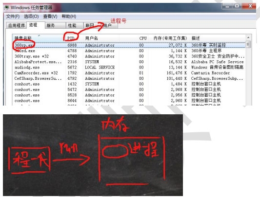
显示系统执行的过程
基本介绍
命令：ps
可以用来查看目前系统中，有哪些进程正在执行，以及他们的执行状况，可以不加任何参数。
常用参数：
- -a 显示当前终端的所有进程信息
- -u 以用户的格式显示进程信息
- -x 显示后台进程运行的参数
- -e 显示所有的进程
- -f 全格式
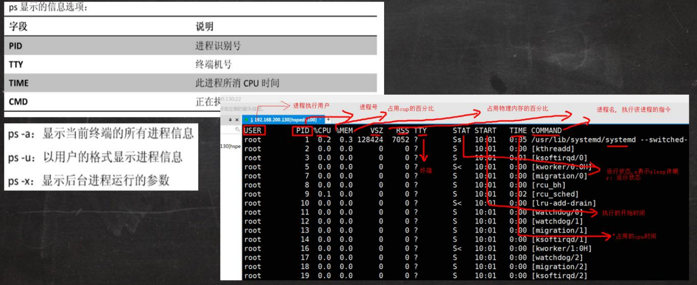
ps 详解
指令：
ps -aux | grep xxx比如我们想看看有没有sshd服务指令说明
field explanation USER 进程执行用户 PID 进程号 %CPU 当前进程占用cpu的百分比 %MEM 占用物理内存的百分比 VSZ 进程占用虚拟内存大小（KB） RSS 进程占用的物理内存的大小（KB） TTY 终端名称 STAT 运行状态，S-表示sleep休眠、s-表示该进程是会话的先导进程，N-表示进程拥有比普通优先级更低的优先级，R-表示正在运行，D-短期等待，z-僵尸进程，T-被跟踪或者被停止等等 STARTED 执行的开始时间 TIME 占用CPU时间 COMMAND 启动进程所用的命令和参数，如果过长会被截断显示
终止进程 kill 和 killall
若是某个进程执行一半需要停止时，或是以消耗了很大的系统资源时，此时可以考虑停止该进程。使用kill命令来完成此项任务。
基本语法：
kill [选项] 进程号 通过进程号杀死/终止进程
killall 进程名称 通过进程名杀死进程，也支持通配符(这在系统因负载过大而变得很慢时很有用)
常用选项：
- -9 强迫进程立即停止
最佳实践：
踢掉某个非法登录用户 (比如某个用户登陆的进程号是11421)
kill 11421
终止远程登陆服务sshd，在适当时候再次重启sshd服务
kill sshd对应的进程号
systemctl start sshd.service
终止多个gedit
killall gedit
强制停止一个终端
kill -9 bash对应的进程号
查看进程树 pstree
基本语法 pstree [选项] 可以更加直观地来看进程信息
常用选项：
- -p 显示进程的PID
- -u 显示进程的所属用户
服务(service)管理
管理指令
基本命令 service 服务名 [start|stop|restart|reload|status]
服务(service)本质就是进程，但是是运行在后台的，通常都会监听某个端口，等待其他程序的请求，比如（mysqld，sshd 防火墙等），因此我们又称为守护进程，是Linux中非常重要的知识点
在CentOS7.0后，很多服务不再使用service，而是systemctl(后面讲)
查看服务名
通过
setup指令进入系统服务带*号的表示开机自动启动，可以通过空格编辑
退出按tab切换到下面的命令按钮
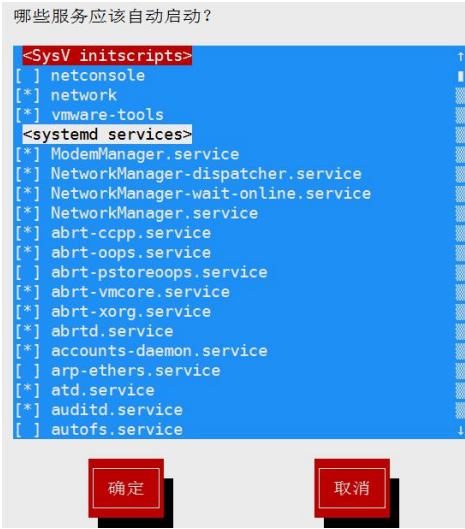
ls -l /etc/init.d/
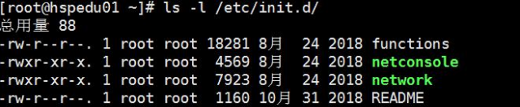
服务的运行级别
linux系统有七种运行级别（runlevel）：常用的是级别3和5
- 运行级别0：系统停机状态，系统默认运行级别不能设为0，否则不能正常启动
- 运行级别1：单用户工作状态，root权限，用于系统维护，禁止远程登录
- 运行级别2：多用户状态（没有NFS），不支持网络
- 运行级别3：完全的多用户状态（有NFS），登录后进入控制台命令行模式
- 运行级别4：系统未使用，保留
- 运行级别5：X11控制台，登陆后进入图形GUI模式
- 运行级别6：系统正常关闭并重启，默认运行级别不能设为6，否则不能正常启动
开机的流程说明
CentOS7.0后运行级别说明
multi-user.target: analogous to runlevel 3
graphical.target: analogous to runlevel 5
查看默认运行级别 |
chkconfig 指令
- 通过chkconfig命令可以给服务的各个运行级别设置自 启动/关闭
- chkconfig指令管理的服务在 /etc/init.d查看
- 注意：CentOS7.0后，很多服务使用systemctl管理
基本语法：
chkconfig --list [|grep xxx]查看服务chkconfig 服务名 --list查看服务chkconfig --level x 服务名 on/off对服务在x等级下的状态进行控制
案例：
对network服务在运行级别3，关闭/开启自启动
chkconfig --level 3 network off/on
使用细节：chkconfig重新设置服务后，需要重启机器才能生效
systemctl 管理指令
基本语法 systemctl [start|stop|restart|status] 服务名
systemctl指令管理的服务在/usr/lib/systemd/system查看
systemctl 设置服务的自启动状态
systemctl list-unit-files [|grep 服务名] 查看服务开机启动状态
systemctl enable 服务名 设置服务开机启动
systemctl disable 服务名 关闭服务开机启动
systemctl is-enabled 服务名 查询某个服务是否是自启动的
案例：对防火墙进行操作
查看当前防火墙状态 => systemctl status firewalld
关闭/开启防火墙 => systemctrl stop/start firewalld
细节：
关闭或启用防火墙后，立即生效 [用telnet测试某个端口即可]
这种方式只是临时生效，当重启系统后，还是回归以前对服务的设置
如果希望设置某个服务自启动或关闭永久生效，需要用sysemctl enable/disable 服务名
打开或关闭指定端口：
在真正的生产环境，往往需要将防火墙打开。但是问题是，如果我们把防火墙打开，那么外部请求数据包就不能跟服务器监听端口通讯。这时，需要让防火墙打开指定的端口，比如80，22，8080…
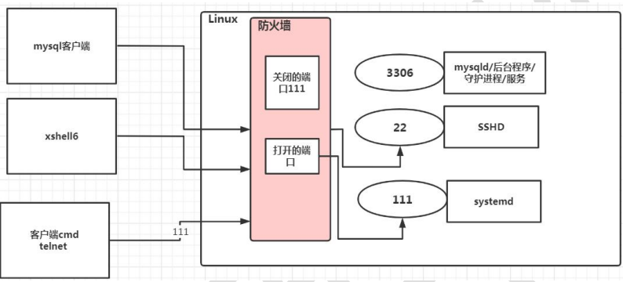
firewall 指令 (重新载入才能生效)
firewall-cmd -permanent --add-port=端口号/协议打开端口firewall-cmd -permanent --remove-port=端口号/协议关闭端口firewall-cmd --reload重新载入firewall-cmd --query-port=端口号/协议查询端口是否开放
top 动态监控进程
基本语法 top [选项]
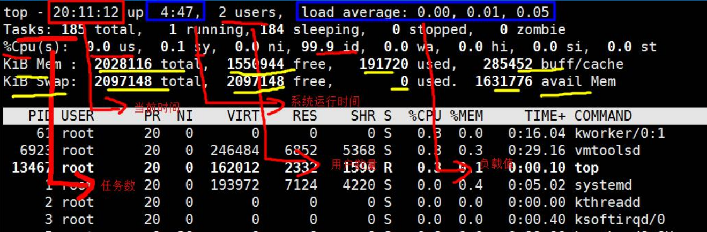
top与ps命令很相似，他们都用来显示正在执行的进程。top和ps最大的不同之处在于，top在执行后可以更新正在运行的进程。
常用选项：
- -d 秒数：指定top命令每隔几秒更新，默认是3秒
- -i：使top不显示任何闲置或者僵尸进程
- -p：通过指定监控进程ID来仅仅监控某个进程的状态
- -u 用户名：监视特定的用户(也可以在进入页面后输入u交互)
交互操作：
- P：以CPU使用率排序，默认就是此项
- M：以内存的使用率排序
- N：以PID排序
- q：退出top
- k：终止进程
netstat 监控网络状态
基本语法 netstat [选项]
常用选项：
- -an：按一定顺序排列输出
- -p：显示哪个进程在调用
案例：查看服务名为sshd的服务信息
netstat -anp | grap sshd |
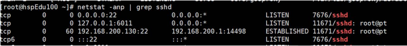
第三列是linuxIP和端口，第四列是通过xhell建立连接的主机的IP和端口
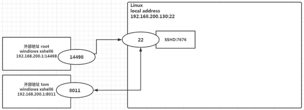
ping 检测主机连接
一种网络检测工具，主要是用于检测远程主机是否正常，或是两部主机间的网线或网卡故障。
命令 ping ip地址
软件包管理 RPM & YUM
rmp包的管理
rpm用于互联网下载包的打包及安装工具，它包含在某些linux分发版中。它生成具有.RPM拓展名的文件。RPM是RedHat Package Manager（RedHat软件包管理工具）的缩写，类似windows的setup.exe，这一文件格式名称虽然打上了RedHat的标志，但理念是通用的。
Linux的分发版都有采用（suse，redhat，centos等），可以说是公用的行业标准。
包的简单查询指令
rpm -qa | grep xxx 查询已安装的rpm列表
案例：查看当前系统是否安装了firefox
- rpm -qa | grep firefox
rpm包名基本格式
一个rpm包名：firefox-60.2.2-1.el7.centos.x86_64
名称：firefox
版本号：60.2.2-1
适用操作系统：el7.centos.x86_64 表示centos7.x的64位系统
(如果是i686、i386表示32位系统，noarch表示通用)
rpm包的其他查询指令
rpm -qa 查询所安装的所有rpm软件包
rpm -qa | more
rpm -qa | grep xxx (如：rpm -qa | grep firefox)
rpm -q 软件包名： 查询软件包是否安装
案例：
- rpm -q firefox
rpm -qi 软件包名：查询软件包信息
案例：
- rpm -qi firefox
rpm -ql 软件包名：查询软件包中的文件
案例：
- rpm -ql firefox
rpm -qf 文件全路径名：查询文件所属的软件包
案例：
rpm -qf /etc/passwd
rpm -qf /root/install.log
安装rpm包
基本语法 rpm -ivh rpm包全路径名称
案例：
- 安装firefox => rpm -ivh /opt/firefox (先按tab补全再回车)
参数：
- -i install(安装)
- -v verobse(提示)
- -h hash(进度条)
卸载rpm包
基本语法 rpm -e rpm包名
案例：
- 删除firebox软件包 => rpm -e firefox
细节：
如果其他软件包依赖于你要卸载的软件包，卸载时会产生错误信息。如果必须要删除这个软件包，可以增加参数--nodeps，就可以强制删除。但是一般不推荐这么做，因为依赖于该软件包的程序可能无法运行。
rmp -e --nodeps 软件包名
yum包的管理
Yum是一个Shell前端软件包管理器。基于RPM包管理，能够从指定的服务器自动下载RPM包并安装，可以自动处理依赖关系，并且一次安装所有依赖的软件包
基本指令
yum list | grep xxx查询yum服务器是否有需要安装的软件yum install xxx下载安装
案例：
- 使用yum的方式来安装firefox
- rpm -e firefox 先卸载
- yum list | grep firefox 查询yum服务器是否有firefox
- yum install firefox 安装
CentOS8.0 vs. CentOS7.0
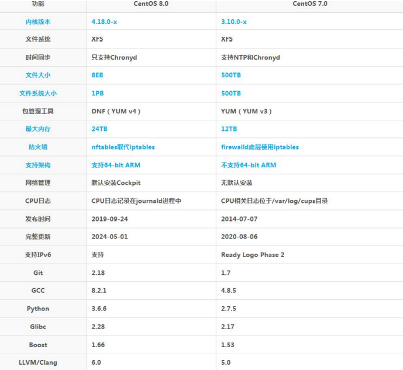
references
 wechat
wechat alipay
alipay